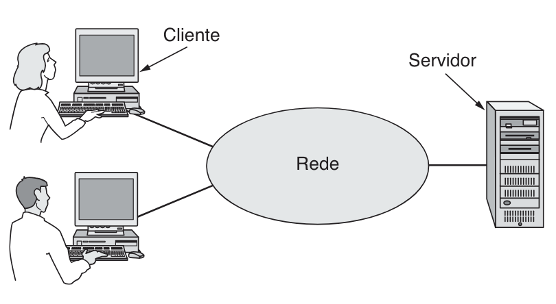
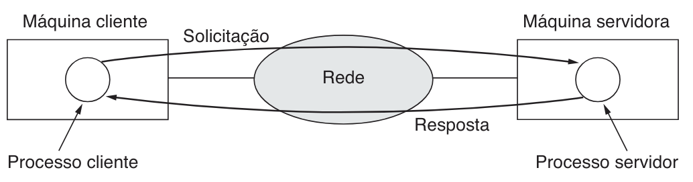
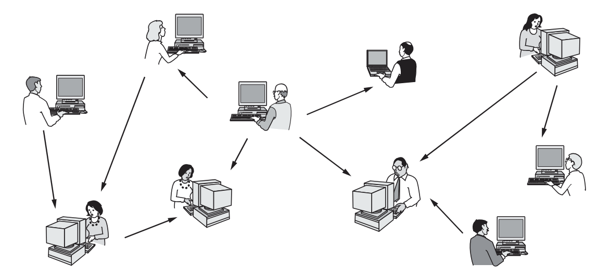
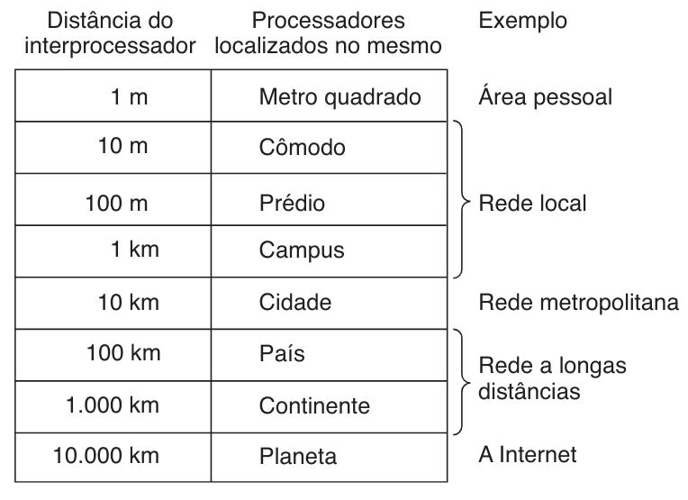
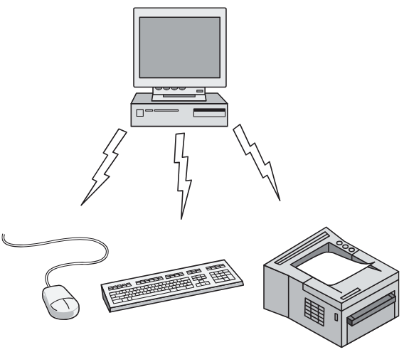
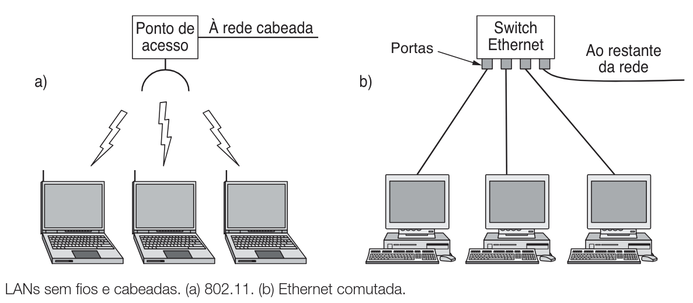
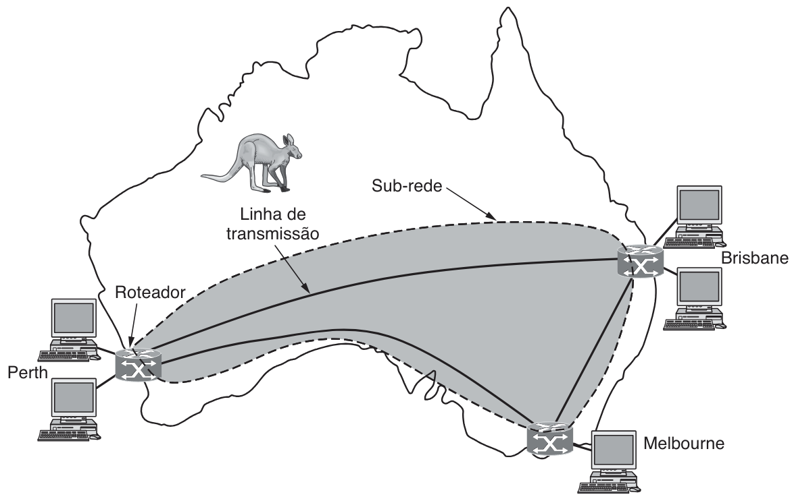
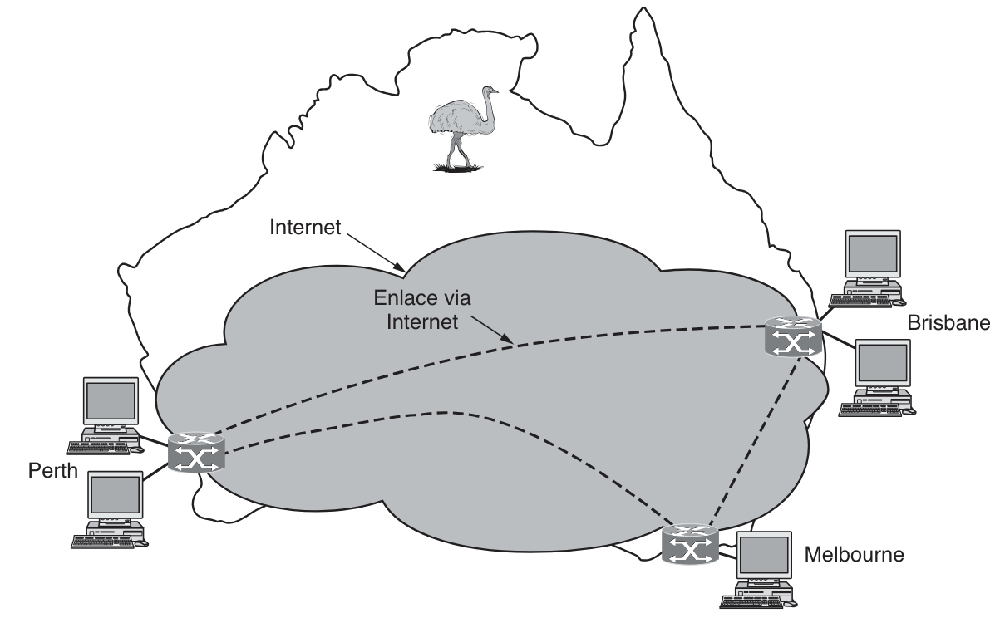

Professor: Gabriel Soares Baptista
| Período | Foco Tecnológico | Marcos Exemplares |
|---|---|---|
| Século XVIII | Sistemas Mecânicos | Revolução Industrial |
| Século XIX | Máquinas a Vapor | Expansão ferroviária |
| Século XX | Gestão da Informação | Telefonia, Rádio, TV, Internet |
A distinção reside na camada de software e na percepção do usuário.
| Característica | Rede de Computadores | Sistema Distribuído |
|---|---|---|
| Percepção | Usuário vê máquinas reais e diferenças. | Sistema parece um único computador unificado. |
| Operação | Logon explícito em máquinas remotas. | Gestão transparente de tarefas. |
| Tecnologia | Conexão física/lógica de máquinas. | Middleware sobre o SO. |
| Exemplo | LAN de uma empresa. | World Wide Web (WWW). |
Transparência é a propriedade em que a distribuição existe, mas não é percebida.
Assim como um vidro transparente: ele está lá, faz parte da estrutura, mas você não enxerga.
Do mesmo modo, rede, múltiplas máquinas, comunicação e falhas existem, porém são abstraídas pelo middleware, fazendo o sistema se comportar como um único computador lógico.


Explica o crescimento explosivo da Internet e a utilidade de estar conectado.

| Sigla | Significado | Descrição |
|---|---|---|
| B2C | Business-to-Consumer | Venda para consumidores (Amazon). |
| B2B | Business-to-Business | Comércio entre empresas. |
| C2C | Consumer-to-Consumer | Leilões on-line (eBay). |
| P2P | Peer-to-Peer | Compartilhamento direto. |
| G2C | Government-to-Consumer | Serviços governamentais. |
Bob Metcalfe formulou uma hipótese para explicar o valor das redes. Qual é a relação matemática proposta por essa lei entre o valor da rede e o número de usuários? Explique como isso justifica o crescimento explosivo da Internet.
Compare a arquitetura Cliente-Servidor com a Peer-to-Peer (P2P). Em qual delas existe uma dependência de máquinas dedicadas para armazenar dados e gerenciar acessos? Cite um exemplo de aplicação legal para redes P2P mencionado no texto (além de compartilhamento de arquivos).
Embora ambos envolvam computadores interconectados, existe uma distinção fundamental na camada de software e na percepção do usuário quanto à diferença das redes de computadores e os sistemas distribuídos. Explique essa diferença, focando no conceito de transparência e no papel do Middleware. Em qual dos dois o usuário precisa fazer logon explicitamente em máquinas específicas?
Relacione a sigla ao seu funcionamento:
| Sem Fio? | Móvel? | Exemplo Típico |
|---|---|---|
| Não | Não | Desktop em escritório. |
| Não | Sim | Notebook em hotel (cabo). |
| Sim | Não | Desktop via Wi-Fi (prédio antigo). |
| Sim | Sim | Tablet registrando estoque em movimento. |
Ubíqua é o feminino de ubíquo. O mesmo que: coletiva, generalizada, pública.
Todos os dados (bits) devem ser tratados igualmente, sem discriminação por conteúdo, origem ou destino. Impede privilégios pagos para grandes corporações.
Duas dimensões fundamentais:
Modos:
Imagine uma pessoa em uma sala de reunião gritando: "Watson, venha cá. Preciso de você". Embora todos na sala ouçam (recebam o pacote), apenas Watson responde e processa a mensagem; os demais a ignoram.
Defina o conceito de Neutralidade da Rede mencionado na seção de questões sociais. Por que os defensores desse princípio argumentam que os operadores de rede não devem priorizar ou bloquear tráfego baseados na origem, destino ou conteúdo?
Descreva a diferença operacional entre enlaces Ponto a Ponto e enlaces de Broadcast. No caso de uma transmissão Broadcast, como uma máquina sabe se um pacote é destinado a ela ou não? Cite a analogia da "sala de reunião" usada no texto.
O texto menciona o futuro da computação invisível através de redes de sensores. Cite dois exemplos práticos de como essa tecnologia pode ser usada na gestão urbana ou na biologia/monitoramento ambiental.
A distância física determina a tecnologia.
| Distância | Tipo | Sigla |
|---|---|---|
| 1 m | Rede Pessoal | PAN |
| 10 m - 1 km | Rede Local | LAN |
| 10 km | Rede Metropolitana | MAN |
| 100 - 1.000 km | Rede de Longa Distância | WAN |
| 10.000 km | Rede Interligada | Internet |



| Método | Característica | Eficiência |
|---|---|---|
| Estática | Divisão por tempo (Time slots). | Ineficiente (desperdício se ocioso). |
| Dinâmica | Centralizada (Base decide) ou Descentralizada (Cada um decide). | Mais eficiente, requer controle de colisão. |


Se há roteadores conectando tecnologias ou organizações diferentes, é uma rede interligada.
Ordene os seguintes tipos de rede baseando-se na distância física típica que elas cobrem, da menor para a maior:
Analise as sentenças abaixo (V ou F):
( ) Em uma rede Bluetooth (PAN), a configuração padrão é "peer-to-peer", onde todos os dispositivos têm igual hierarquia, sem um mestre definido.
( ) O mecanismo de alocação de canal estático (divisão por tempo) é considerado ineficiente para LANs porque desperdiça capacidade quando uma máquina não tem dados para transmitir no seu turno.
( ) O Wi-Fi (IEEE 802.11) opera tipicamente conectando dispositivos a um Ponto de Acesso (AP) central, que funciona como uma ponte para a rede cabeada.
Defina seus dois componentes principais (Linhas de Transmissão e Elementos de Comutação). Além disso, explique como uma VPN (Rede Privada Virtual) permite conectar filiais distantes sem o custo de alugar linhas físicas dedicadas.
Quando conectamos redes tecnologicamente diferentes (ex: uma rede sem fio a uma cabeada), precisamos de dispositivos de conversão.
Explique como a infraestrutura de TV a cabo evoluiu de um sistema de "Antena Comunitária" unidirecional para uma Rede Metropolitana (MAN) moderna. Qual foi a mudança técnica fundamental que permitiu o tráfego de Internet nessas redes?